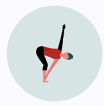
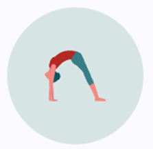
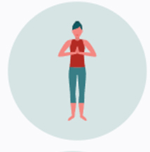
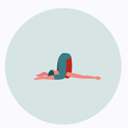
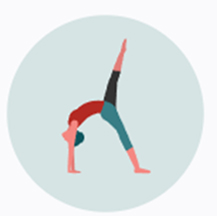

Hatha Yoga
Focuses on physical postures and breathing techniques, making it
agood introduction for beginners.

Vinyasa Yoga
Involves a dynamic flow of poses synchronized with breath,
emphasizing movement and transition.

Ashtanga Yoga
A structured, fast-paced style that follows a specific sequence of
postures and is known for its rigorous practice.

Iyengar Yoga
Emphasizes alignment and precision in poses, often using props like
blocks and straps for support.

Bikram Yoga
Consists of a set series of poses practiced in a heated room, aimed
at detoxification and flexibility.

Kundalini Yoga
Focuses on awakening spiritual energy through breath, chanting, and
specific movements, integrating mind, body, and spirit.